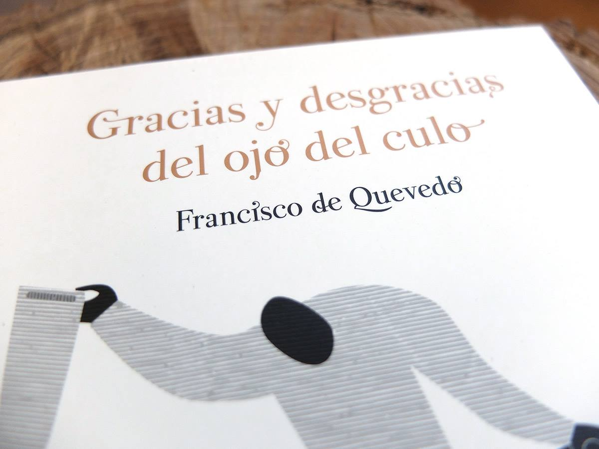
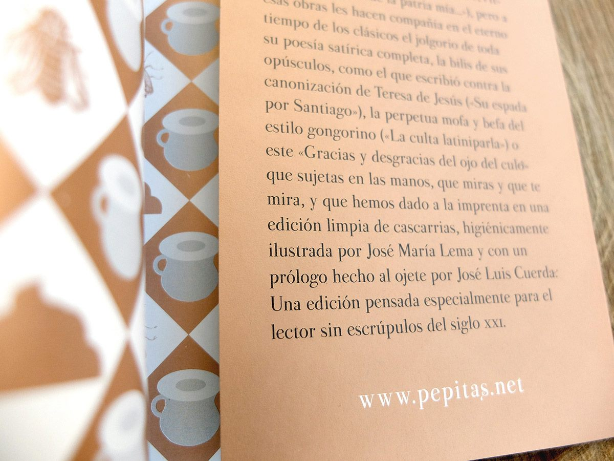
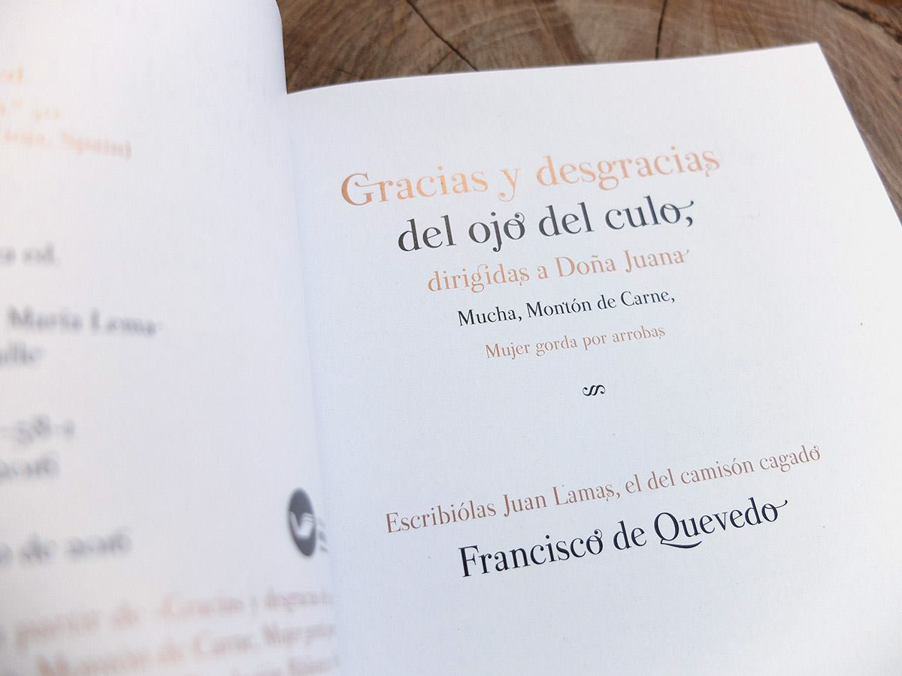
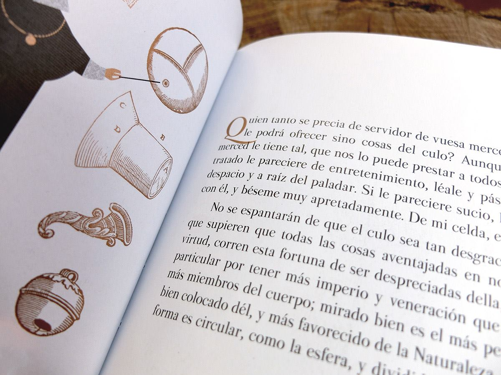
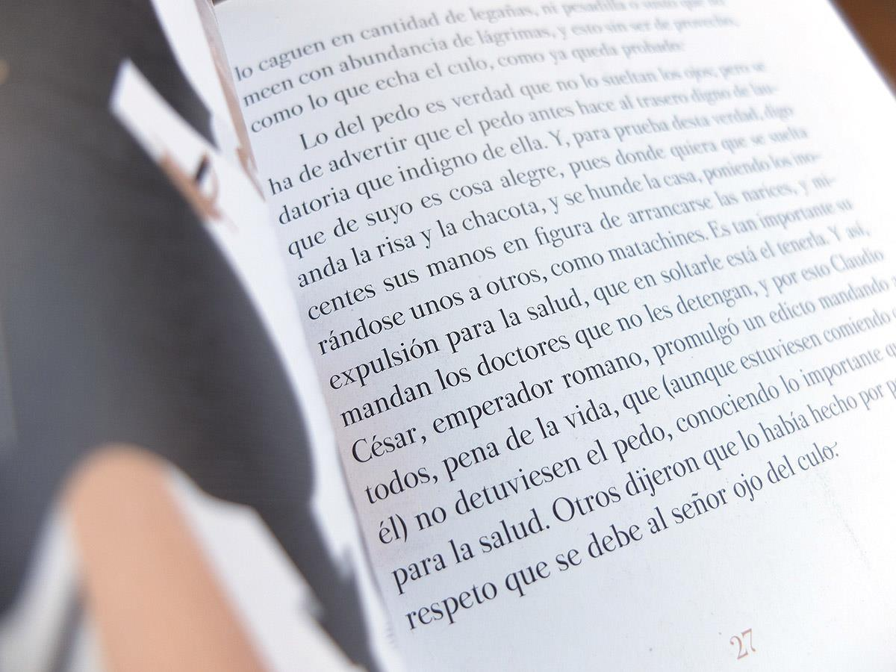

A classic didone designed following the rules set by Bodoni in the 18th Century, combined with many features from the antique Spanish punches of that period. The font is named after type designer Pedro Arilla’s grandmother as a tribute.
Francisco de Quevedo, Gracias y desgracias del ojo del culo (Logroño: Pepitas de calabaza, 2016).
    